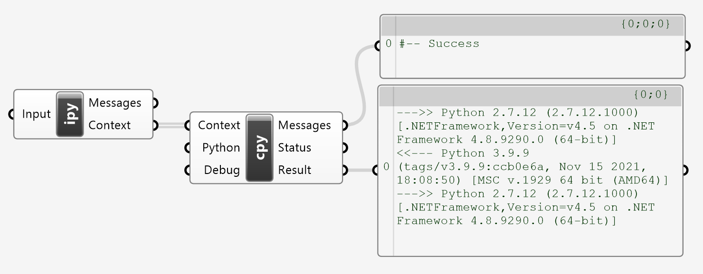

CPython Component
The objective of this section is to overcome the incompatibilities between IronPython and CPython. The python used in Rhino in version 7 is known as IronPython and its interpreter is based on the .NET framework. This is unlike "regular" python, known as CPython, which causes problems such as (a) the version of IronPython used is a bit too old, namely python 2, while the current version of python is 3, featuring significant language changes, and (b) most of the interesting libraries such as numpy, matplotlib, pytorch etc. are incompatible with IronPython.
Component Usage
To evaluate python code using the CPython interpreter requires a setup as seen below, where the ipy script component contains your code and the cpy component contains boilerplate code for invoking CPython, processing the result and reporting errors. The input parameters go into the ipy script component and the output parameters, or results, come out of the cpy component. Therefore, the cpy component can be reused as is and does not need any modifications. Note that it is assumed that CPython is already installed on the computer.

Usage Conventions
There are some conventions to be followed for bridging between IronPython and CPython. The code below provides a template.
""" CPython Code
"""
def PythonCode( params ):
import sys
return params + '\n<<--- Python ' + sys.version
""" IronPython -> CPython Parameter Conversion
"""
def PythonParams( params ):
import sys
if( params is not None ):
return params + '\n--->> Python ' + sys.version
else:
return '--->> Python ' + sys.version
""" CPython -> IronPython Result Conversion
"""
def PythonResult( params ):
import sys
return params + '\n--->> Python ' + sys.version
Context = ( ghenv, #-- Required
PythonCode, #-- Required
PythonParams( Input ), #-- Optional
PythonResult ) #-- Optional
- The code in the IronPython side must define a function that will be executed in the CPython context, see
PythonCode( ). Inside this function, libraries unavailable to IronPython can be used. However, the language syntax must be python 2 compatible, otherwise the script editor will raise exceptions. The name of this function is not important. - The data between IronPython and CPython must be simple, that is strings, numbers, lists and dictionaries. This is because not all libraries are available in both environments. Additionally, exchange of data may require some conversions. Indicatively, the function
PythonParams( )converts data from IronPython to CPython and the functionPythonResult( )performs the opposite. The names of these functions is also not important. - The component must output a
Contextparameter containing some required and some optional information which are passed to the [Run] component'sContextinput parameter.- Required: the Grasshopper environment variable.
- Required: The function that will be execute in the CPython context.
- Optional: The parameter data sent to the CPython context or
None. - Optional: The function to convert the CPython result to IronPython or
None
Note that the all functions require a single parameter that will receive data passed around the different contexts. If more than one parameters are needed, they can be packed in a list and unpacked as needed.
Installation Path
Since it is often the case that more than one CPython versions are installed, the
cpy component can be supplied with the path of the desired version. If the None is provided then it will use the python as set in the system PATH environment variable. During python installation there is an option to set the PATH, if this was not selected, then the python's path must be supplied to the cpy component.
Rhino to NumPy
The sample below demonstrates how to use numpy to compute the average among a list of points. It assumes that numpy is already installed, otherwise use pip install numpy. The PointAverage( ) function expects a list of point coordinates, which it converts to a numpy array, computes the mean value and returns a list of coordinates. The ToNumPy( ) as well as the ToRhino( ) functions take care of the conversion between Point3d and list[float].
""" Point Average using NumPy
"""
def PointAverage( points ):
import numpy as np
mean = np.mean( np.array( points ), axis = 0 )
return mean.tolist( )
""" Points to Coordinate Lists
"""
def ToNumPy( points ):
return [[point.X, point.Y, point.Z]
for point in points]
""" Coordinate List to Point
"""
def ToRhino( point ):
from Rhino.Geometry import Point3d
return Point3d( point[0], point[1], point[2] )
Context = ( ghenv, PointAverage, ToNumPy( Points ), ToRhino )
Rhino to Rhino
Rhino provides a version of its common objects library known as rhino3dm which is compatible with CPython, see documentation available. To install the library use the command pip install rhino3dm in a console window. While the CPython library is limited, it is possible to exchange complex object data between the two environments using the serialization methods available in both contexts. The process is pestered with conversions, from and to json objects, however the logic is simple and follows the steps listed below.
| Step | Method | Context | Source | Target |
|---|---|---|---|---|
| 1 | object.ToJSON( ) |
IronPython | object | str |
| 2 | json.loads( ) |
CPython | str | dict |
| 3 | class.Decode( ) |
CPython | dict | object |
| 4 | object.Encode( ) |
CPython | object | dict |
| 5 | json.dumps( ) |
CPython | dict | str |
| 6 | class.FromJSON( ) |
IronPython | str | object |
The example below demonstrates passing a curve object across boundaries, splitting into two parts and returning it back.
""" Load Curve from Json Data
"""
def Exchange( data ):
import json
from rhino3dm import Curve
curve = Curve.Decode( json.loads( data ) )
parts = curve.Split( 0.5 )
return [json.dumps( part.Encode( ) )
for part in parts]
""" Encode Curve to Json Data
"""
def Encode( curve ):
return curve.ToJSON( None )
""" Load Curves from Json Data
"""
def Decode( data ):
from Rhino.Runtime import CommonObject
parts = [CommonObject.FromJSON( item )
for item in data]
return parts
Context = ( ghenv, Exchange, Encode( spline ), Decode )
Advanced Topics
The source of the cpy component is listed below for potential customization, such as activating virtual environments etc. Overall, the function InvokePython( ): (a) extracts the relevant code from the connected ipy component; (b) it appends some boilerplate code and writes the code into a CPython file saved on the desktop; (c) then the python code is executed and the results are saved in a json file also on the desktop; finally, (d) the result value is read, decoded and exported as the Result parameter. Errors are reported through the Messages output parameter and a success or failure Status code is also exported.
import os, sys, json, traceback, ast
def InvokePython( context, method, params, callback ):
""" Extract Source Code from Connected Component
Note: The method's co_code member is empty.
"""
try:
source, target = -1, -1
code = context.Component.Code.replace( '\r\n', '\n' )
module = ast.parse( code )
ast.fix_missing_locations( module )
for node in ast.walk( module ):
if( source < 0 ):
if( 'Function' in str( type( node ) ) ):
if( node.name == method.__name__ ):
source = node.lineno - 1
else:
target = node.lineno - 1
break
lines = code.split( '\n' )
code = '\n'.join( lines[source:target] ).strip( )
if( Debug ): print( '#-- Code\n{}'.format( code ) )
except:
print( 'Failed loading the CPython function.' )
print( traceback.format_exc( ) )
return False, None
""" Serialize Parameters
Note: Not required for certain data types but
enforced for checking data compatibility.
"""
try:
if( params is not None ):
params = json.dumps( params )
else:
params = []
if( Debug ): print( '#-- Params\n{}'.format( params ) )
except:
print( 'Failed serializing parameters.' )
print( traceback.format_exc( ) )
return False, None
""" Complete Script with Boilerplate
Include parameters, invoke function and
persist results to json file.
"""
desktop = os.path.join( os.path.join(
os.path.expanduser( '~' ) ), 'Desktop' )
target = os.path.join( desktop, 'target.json' )
code += '\n'.join( ['',
'params = ' + params,
'result = {}( params )'.format( method.__name__ ),
'import json',
'target = r"{}"'.format( target ),
'with open( target, \'w\' ) as stream:',
' stream.write( json.dumps( result ) )'] )
if( Debug ): print( '#-- Target\n{}'.format( target ) )
if( Debug ): print( '#-- Method\n{}( )'.format( method.__name__ ) )
""" Write Script to Desktop
"""
try:
source = os.path.join( desktop, 'source.py' )
with open( source, 'w' ) as stream:
stream.write( code )
if( Debug ): print( '#-- Source\n{}'.format( source ) )
except:
print( 'Failed writing python script file.' )
print( traceback.format_exc( ) )
return False, None
""" Invoke CPython Interpreter
Note: Maybe detect OS and omit startupinfo.
Note: Maybe use pipes instead of file io.
Note: Some subprocess combos crash Rhino.
"""
try:
if( Python is not None ):
python = Python
else:
python = 'python'
command = '{} "{}"'.format( python, source )
if( Debug ): print( '#-- Command\n{}'.format( command ) )
import subprocess
info = subprocess.STARTUPINFO( )
info.dwFlags |= subprocess.STARTF_USESHOWWINDOW
result = subprocess.check_output( command,
startupinfo = info, stderr=subprocess.STDOUT )
if( not Debug ): os.remove( source )
except subprocess.CalledProcessError as exc:
print( exc.output )
return False, None
except:
print( 'Failed executing python script.' )
print( traceback.format_exc( ) )
return False, None
""" Load Result Data from Json
"""
try:
with open( target ) as stream:
data = stream.read( )
if( Debug ): print( '#-- Result\n{}'.format( data ) )
except:
print( 'Failed loading result data.' )
print( traceback.format_exc( ) )
return False, None
""" Parse Result from Json Data
"""
try:
result = json.loads( data )
if( not Debug ): os.remove( target )
except:
print( 'Failed parsing json result data.' )
print( traceback.format_exc( ) )
return False, None
""" Convert Data to IronPython
"""
try:
if( callback is not None ):
result = callback( result )
except:
print( 'Failed decoding the result data.' )
print( traceback.format_exc( ) )
print( '#-- Success' )
return True, result
Status, Result = InvokePython( *Context )